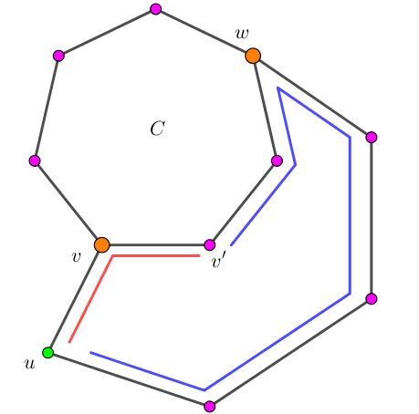

给定一张无向简单图，你需要判断，是否存在两个点 $u, v$，使得存在三条顶点不相交的从 $u$ 到 $v$ 的简单路径。
第一行包含两个正整数 $n, m$ ($n, m \leq 2 \times 10^5$)，分别表示顶点的个数和边的数量。
接下来的 $m$ 行，每行包含两个正整数 $u, v$ ($1 \leq u, v \leq n; u \neq v$)，描述一条无向边。
保证图为简单图，不保证图连通。
如果存在满足条件的点对，第一行输出 YES，第 $2 \sim 4$ 行，每行描述一条路径。
该行的第一个整数 $l$ ($l \geq 2$) 表示路径的长度 (这里的长度指的是点的个数)，接下来 $l$ 个整数 $p_1, p_2, \cdots, p_l$ 依次表示这条路径所经过的所有点，你需要保证 $p_1 = u, p_2 = v$，$p_i$ 与 $p_{i+1}$ 之间有一条边相连，且同一行内 $p_i, p_j$ 两两不相同。
如果不存在满足条件的点对，输出一行 NO。
由于图可能不连通，因此我们可以对每个连通分量分别考虑 (显然不同连通分量之间是独立的)。于是只需考察图连通的情形。
先考虑路径只有两条的情况：
容易证明，存在两条简单路径当且仅当原图中有圈。
(若原图中有圈，则圈上的任意两点在圈上就有两种方向可以到达，若原图中没有圈，则原图是树，由树的性质知两点间路径唯一)
那对于三条路径的情况呢？
首先，由于要求顶点不相交，我们可以对原图进行点双缩点，在每个点双连通分量中考虑即可。
(ps: 注意一个点可能属于多个点双，但是所有点双的大小之和也是 $O \left( n \right)$ 的 )
考虑一个点双，如果它是平凡点双 (点数 $\leq 2$) 或圈，则这个点双是没有答案的。
否则，一定存在两个点，它们之间存在三条路径。
任取非平凡点双 $B$ 中的一个圈 $C = v_0 \to v_1 \to v_2 \to \cdots \to v_{l-1} \to v_0$ (由于非平凡点双不是树，因此一定存在圈)。
由于 $B$ 不是圈，因此 $B$ 中存在圈外的其它边，且 $\max\limits_{v \in C} d_B \left( v \right) \geq 3$。
任取 $v \in C, d_B \left( v \right) \geq 3$，于是存在一条与 $v$ 关联的边 $\left( v, u \right)$，其中 $u \notin C$。
考虑 $v$ 在圈上的邻点 $v'$，由点双的性质，$u$ 和 $v'$ 之间存在两条顶点不相交的路径。不妨设其中一条为 $u \to v \to v'$。
考察另外一条路径，设从 $u$ 出发最早交 $C$ 于 $w$ ($w \notin v$)，即 $u \leadsto w$。
于是 $v$ 与 $w$ 间存在一条与 $C$ 不交的路径：$v \to u \leadsto w$。
又 $v, w \in C$，因此它们在环内又存在两条路径，从而这两个点之间存在三条顶点不相交的路径。
在具体实现的时候，先的原图进行点双缩点，然后对于每个点双，找到它所有的点 (构建导出子图)，然后随便 dfs 就可以得到一个圈。
然后我们将圈上的边删去后，枚举圈上的点 $v_i$，进行 dfs，如果某一时刻能 dfs 到圈上的另一个点 $v_j$，意味着我们就找到了路径。由刚才的证明可知，这样的 dfs 一定能成功。
总时间复杂度 $O \left( n + m \right)$。
#include <bits/stdc++.h>
#define EB emplace_back
#define ad(x) (((x - 1) ^ 1) + 1)
typedef std::pair <int, int> pr;
typedef std::vector <pr> vector;
const int N = 200054, M = N * 2;
int V, E, Es = 0;
int to[M], first[N], next[M];
int cnt = 0, id[N], low[N];
int top = 0, stack[N];
int bcc_cnt = 0, p[M], size[N];
vector es[N];
inline void down(int &x, const int y) {x > y ? x = y : 0;}
inline bool bel(int x, int bcc) {return p[x] == bcc + V || p[bcc + V] == x;}
inline void addedge(int u, int v) {
to[++Es] = v, next[Es] = first[u], first[u] = Es;
to[++Es] = u, next[Es] = first[v], first[v] = Es;
}
void dfs(int x, int px = 0) {
int i, y, z;
id[x] = low[x] = ++cnt, stack[top++] = x;
for (i = first[x]; i; i = next[i])
if (!id[y = to[i]]) {
dfs(y, x), down(low[x], low[y]);
if (id[x] == low[y])
for (p[++bcc_cnt + V] = x, size[bcc_cnt] = 1, z = 0; z != y; ++size[bcc_cnt])
p[z = stack[--top]] = bcc_cnt + V;
else if (id[x] < low[y])
p[ stack[--top] ] = 0;
} else if (y != px)
down(low[x], id[y]);
}
bool banned[M];
int cyc[N], icyc[N];
int len = 0, ans[N];
inline void set(int id, int v) {cyc[id] = v, icyc[v] = id;}
inline void push(int x) {ans[len++] = x;}
inline void flush() {printf("%d", len); for (int i = 0; i < len; ++i) printf(" %d", ans[i]); len = 0, putchar(10);}
bool bcc_dfs(int x, int rt) {
int i, y; stack[top++] = x;
for (i = first[x]; i; i = next[i]) {
if (y = to[i], !banned[i] && icyc[y] > 0 && y != rt) return stack[top++] = y, true;
if (!icyc[y] && (icyc[y] = -1, bcc_dfs(y, rt))) return true;
}
return --top, false;
}
bool solve(int bcc) {
int i, j, k, v, head, ecnt = es[bcc].size();
if (assert(size[bcc] <= ecnt), size[bcc] == ecnt) return false;
puts("YES");
for (pr &e : es[bcc]) addedge(e.first, e.second);
for (set(i = 1, p[bcc + V]); ; ) {
if (j = first[cyc[i]], cyc[i - 1] == to[j]) j = next[j];
assert(j), banned[j] = banned[ad(j)] = true, v = to[j];
if (head = icyc[v]) break;
else set(++i, v);
}
for (j = 0; j < head; ++j) icyc[ cyc[j] ] = 0;
for (j = head; j <= i; ++j) if (top = 0, v = cyc[j], bcc_dfs(v, v)) break;
k = icyc[ stack[top - 1] ];
for (v = j; v != k; ++v > i ? v = head : 0) push(cyc[v]); push(cyc[k]), flush();
for (v = j; v != k; --v < head ? v = i : 0) push(cyc[v]); push(cyc[k]), flush();
for (i = 0; i < top; ++i) push(stack[i]); flush();
return true;
}
int main() {
int i, u, v, w;
scanf("%d%d", &V, &E);
for (i = 0; i < E; ++i) scanf("%d%d", &u, &v), addedge(u, v);
for (i = 1; i <= V; ++i) if (!id[i]) dfs(i);
for (i = 1; i <= Es; i += 2) {
u = to[i + 1], v = to[i];
if ((w = p[u] - V) > 0 && bel(u, w) && bel(v, w)) es[w].EB(u, v);
else if ((w = p[v] - V) > 0 && bel(u, w) && bel(v, w)) es[w].EB(u, v);
}
Es = 0, memset(first, 0, sizeof first);
for (i = 1; i <= bcc_cnt; ++i) if (solve(i)) return 0;
return puts("NO"), 0;
}
本题 (按照本例方法) 实现时，细节比较多，主要列举如下：
坑1：由于一个点可能会被搜到 $O \left( n \right)$ 次，因此不能每次都遍历邻接表，需要将需要的边提出来使用 (即预先处理每条边属于哪个点双)。
坑2：不过，这里可以由一个判定来代替：(由于点双中不存在 $0$ 度点和 $1$ 度点) 一个点双可行当且仅当点双中的边数大于点数。
因此，预处理出每个点双的点数和边数后，只需判断一个点双的边数是否大于点数，如果是，直接进去后 exit() 就可以了。
坑3：在搜索的过程中，记得把原来环 $C$ 上的边去掉，不然可能会搜到原来的边，导致得到错解。
坑4：判断一个点是否属于一个点双，可以通过它们在点双缩点树 (圆方树) 中是否相邻来判断。